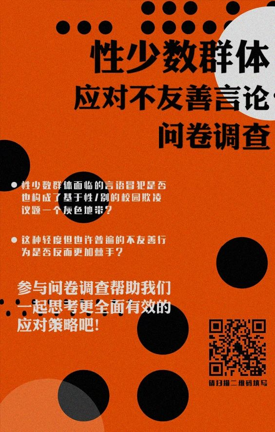

问卷调查 | 性少数群体应对的不友善言论

在今年的紫色校园日活动——紫色紫金港中，我们深深感慨于基于性/别的校园霸凌还不被很多人看见，根据WTO的报道，每四起校园暴力事件中就有一起是性别霸凌，比大多数受访者猜测的比例都要高。
试想一个场景（基于丸嘤嘤的真实经历），当你作为大一新生入学时，大家一起聊天讨论中有人流露出对同性恋的排斥，你是否还会对表露自己的性少数身份感到怯弱迟疑，内心感到受伤？
所以我们在想，性少数群体面临的言语冒犯是否也构成了基于性/别的校园欺凌议题的一个灰色地带？这种轻度（但也许普遍）的不友善行为是否反而更加棘手？
“在生活中遇到一些不友善的言论或行为，我们感觉到很难开口制止别人或者表达自己感到被冒犯。而当我们某一次鼓起勇气说出了自己的想法之后，我们也并没有受到非常负面的反馈，之后遇到类似的事我们也更容易说出口。所以我们觉得可以做一个工作坊，提供安全的环境让大家练习这样的发声，以后在遇到类似事情的时候可以知道要怎么做。以及也可以提供风险管理的方案，比如对方可能会有激烈的反应，我们要如何应对。”
——文文with丸嘤嘤
在工作坊开始前，为了更好地了解大家对于该议题的认识和经历，以及全面地了解性少数群体遇到的不友善言论困境，以制定更丰富更有用的工作坊环节，我们将进行一次问卷调查，根据调查结果中反馈的情况进行工作坊的完善。
我们需要你的参与！快戳下面二维码进行问卷填写吧！
排版：挪挪
审校：乙烯 以捷
您可以扫描这个二维码或者点击阅读原文参与调查
也欢迎转发调查海报到您的朋友圈